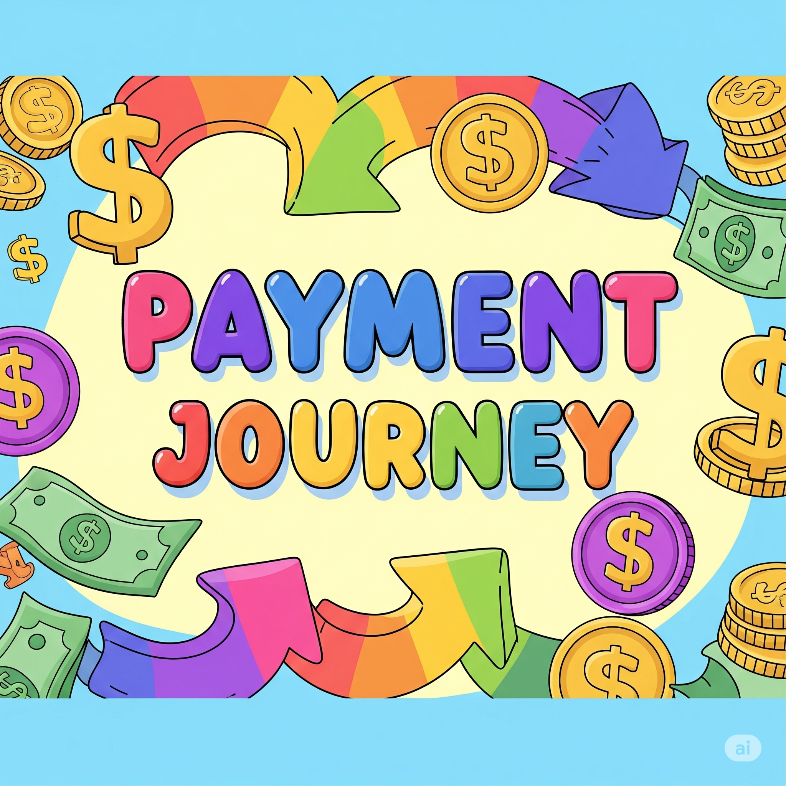
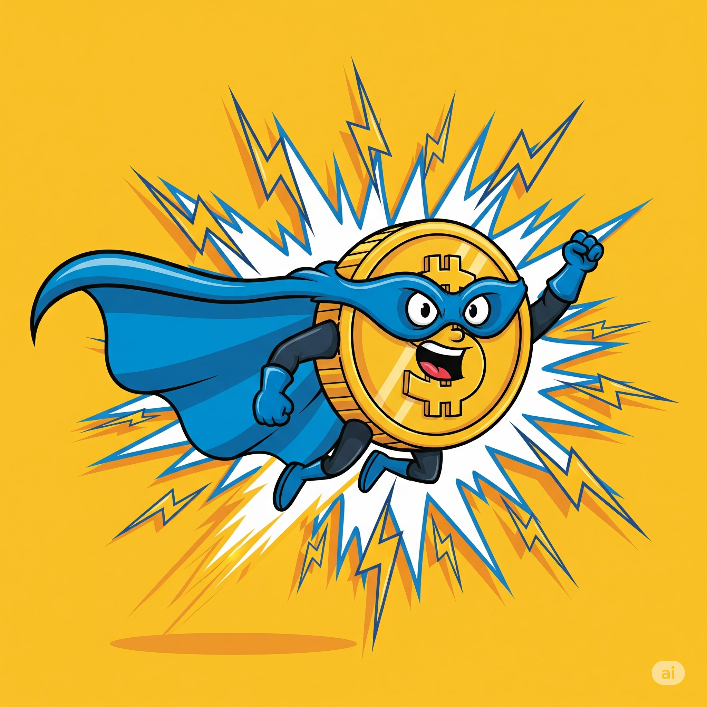
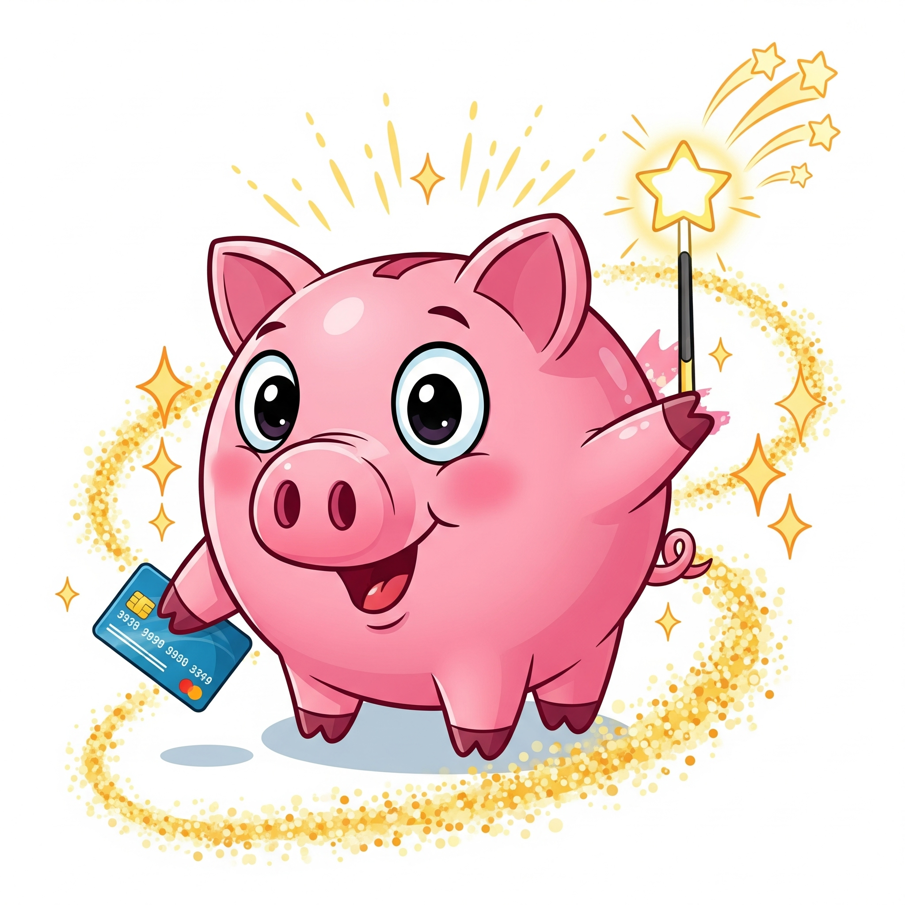

How Money Moves! 💰
Join our friendly money mascot to discover how different payment methods work!

Check 📝
Like mailing a letter with money inside!
Learn how it works

ACH 🤖
Like your school's lunch account auto-reload!
Learn how it works

Wire Transfer ⚡
Like sending money by telegram - fast but costs more!
Learn how it works

RTP 🚀
Like instant messaging for money!
Learn how it works
Balance Transfer 🎪
Like moving toys between your toy boxes!
Learn how it works

Debit Card 🐷
Like using a magic card that takes money directly from your piggy bank!
Learn how it works
Real Life Examples
Allowance Day 💰
When your parents give you allowance, they might use different payment methods:
- Cash = Instant payment (like RTP)
- Check = Mailed payment (like Check)
- Bank transfer = Automatic payment (like ACH)

Buying Games Online 🎮
When you buy a new game for your console:
- Debit card = Takes money right from your account
- Gift card = Like a balance transfer between accounts
- Parent's credit = They pay now, you pay back later